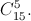

The city plan is a rectangle of $5 \times 10$ cells. On the streets, a one-way traffic system is introduced: it is allowed to go only to the right and upwards. How many different routes lead from the bottom left corner to the upper right?
For each route, match a string of 15 letters: "R" and "U" $($"R" means moving to the cell on the right, "U" means moving to the cell upwards$)$.
Each route can be associated with a string of 15 letters: "R" and "U" $($see the hint$)$, and the number of the letters "R" must be exactly equal to 5, and the number of the letters "U" must be exactly equal to 10. Conversely, for each such line of letters a unique route can be found. Therefore, the number of routes is equal to the number of such lines, which, in turn, is equal to 
3003 routes.